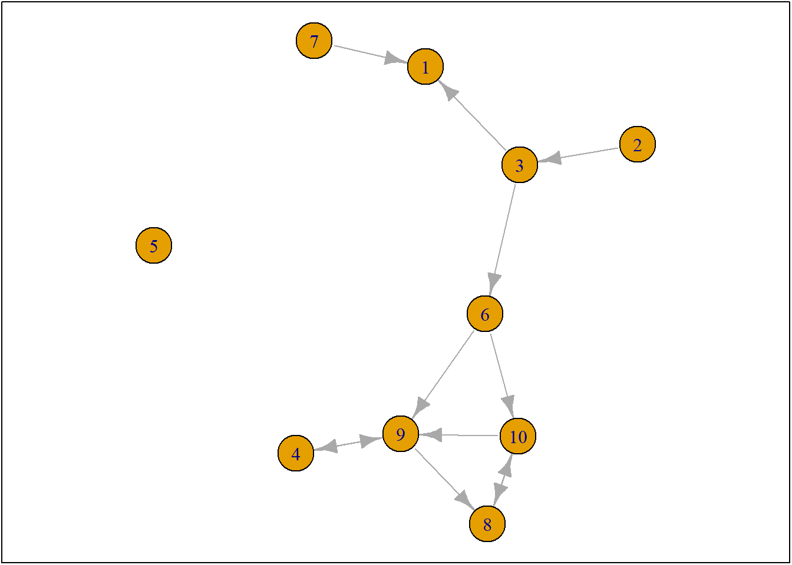
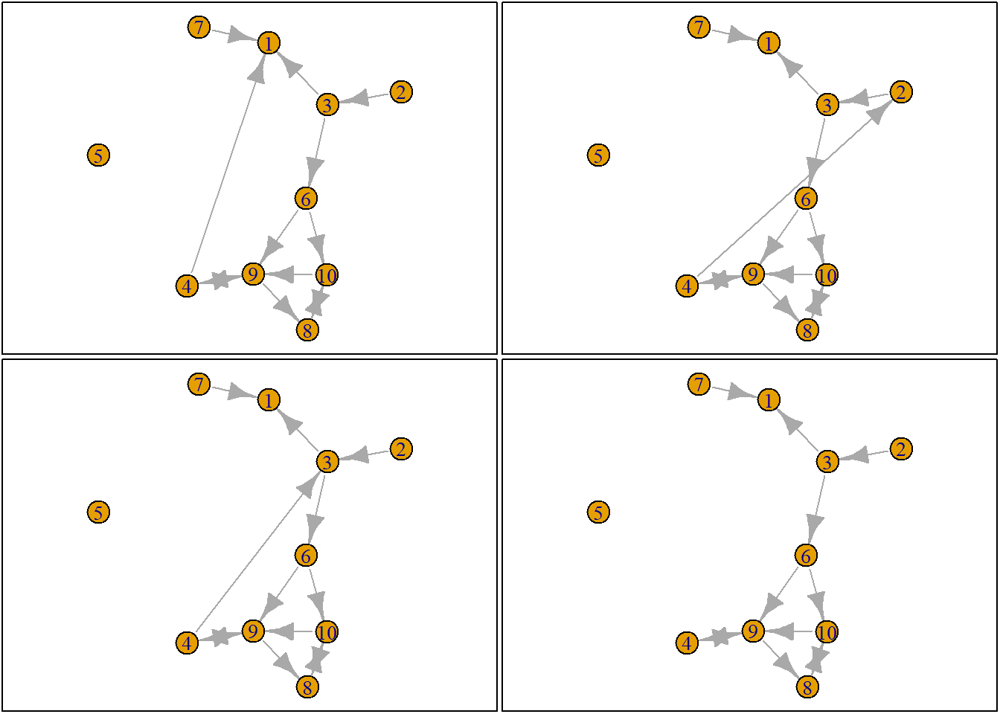
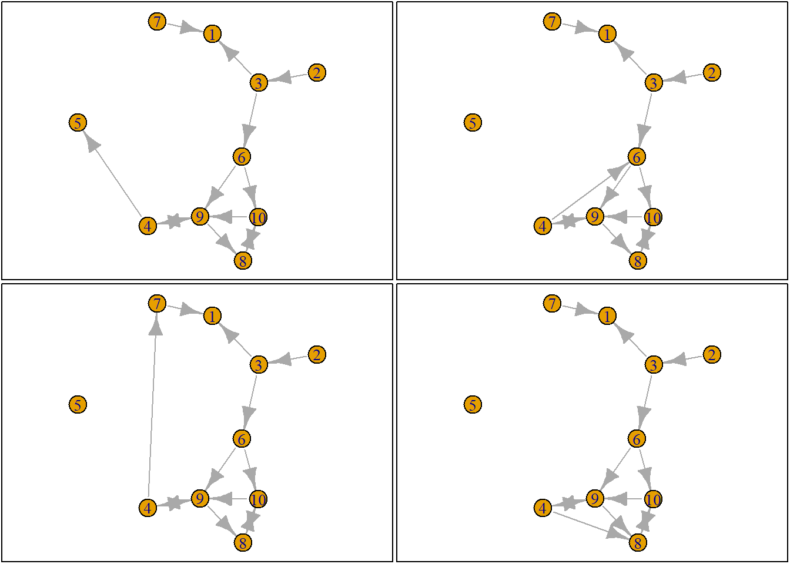
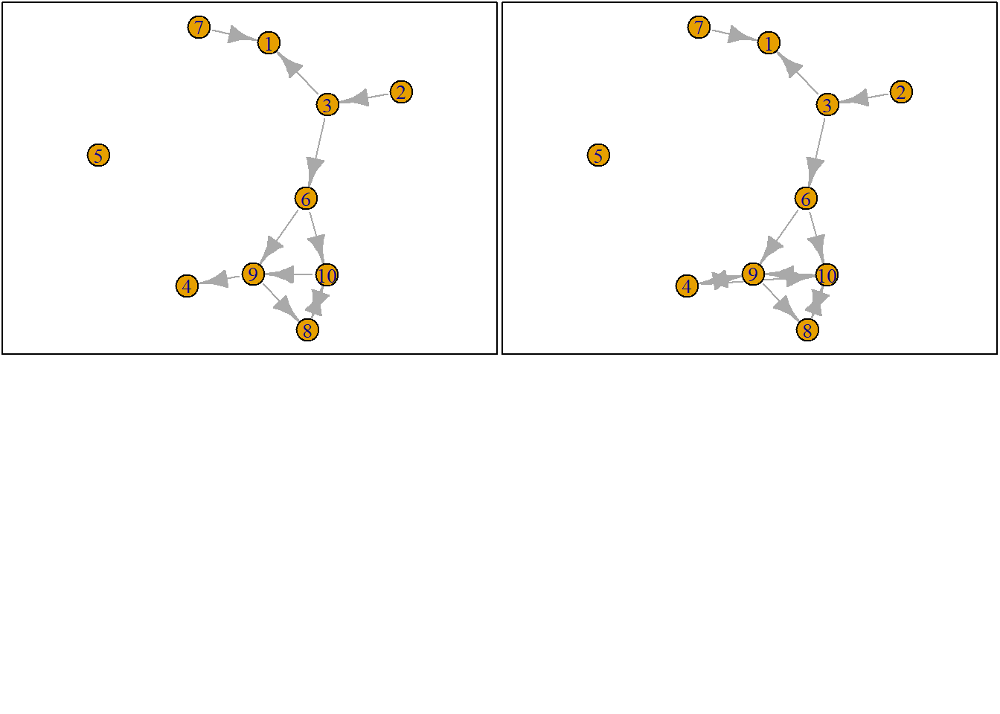

Last compiled on October, 2025
Chapter 7 SNASS - R SIENNA - CODE FOR NETWORKS ANALYZE STATIC DATA AND EVOLUTION OF NETWORKS + Co-evolution
#Overview Rsienna: models network structure (dyads) – important – wants to explain observed network at T1 evolving over time. Important: how ties evolve over time.
Example. explaining how friendship relations evolve. Fo ex. 2 class rooms with very different friendship structures. The structure of T1 depends on before - therefore, the T2 moment is dependent on the T1 structure: T2 depends on what observed at T1.
Relevance may come from T1. Ex. segregation by gender –> homophily by gender. Universal mechanisms may be more or less relevant depending on observations of T1 - and even underlying theory.
Model: estimates rules for how to change ties and behavior. Trying to figure out- not transitive triads, but if an agent has preference to then form triad. Individual level mechanisms (not macro)- micro theory of action. Interdependent on decisions. Try to find rules of individual agents.
Now, suppose we know the rules. Then we could simulate mechanisms – ex. 4 degrees, types of ties, evolution of network.
If ministep is smallest possible - if allow two-step (“I only want to help you if you help me”) – symptomatic – only want reciprocated tie (RSienna underestimates reciprocity) - doesn’t help with hypothesis testing. Mini-steps come with assumptions, need to be critical that inidividual ministeps may not assume / weight everything correctly.
#Now: RSienna Mini Logic - Sample ego - Construct possible alternative future networks based on all possible ministeps of ego - Calculate how sampled
rm(list = ls())
fpackage.check <- function(packages) {
lapply(packages, FUN = function(x) {
if (!require(x, character.only = TRUE)) {
install.packages(x, dependencies = TRUE)
library(x, character.only = TRUE)
}
})
}
fsave <- function(x, file = NULL, location = "./data/processed/") {
ifelse(!dir.exists("data"), dir.create("data"), FALSE)
ifelse(!dir.exists("data/processed"), dir.create("data/processed"), FALSE)
if (is.null(file))
file = deparse(substitute(x))
datename <- substr(gsub("[:-]", "", Sys.time()), 1, 8)
totalname <- paste(location, datename, file, ".rda", sep = "")
save(x, file = totalname) #need to fix if file is reloaded as input name, not as x.
}
fload <- function(filename) {
load(filename)
get(ls()[ls() != "filename"])
}
fshowdf <- function(x, ...) {
knitr::kable(x, digits = 2, "html", ...) %>%
kableExtra::kable_styling(bootstrap_options = c("striped", "hover")) %>%
kableExtra::scroll_box(width = "100%", height = "300px")
}rm(list = ls())
fpackage.check <- function(packages) {
lapply(packages, FUN = function(x) {
if (!require(x, character.only = TRUE)) {
install.packages(x, dependencies = TRUE)
library(x, character.only = TRUE)
}
})
}
fsave <- function(x, file = NULL, location = "./data/processed/") {
ifelse(!dir.exists("data"), dir.create("data"), FALSE)
ifelse(!dir.exists("data/processed"), dir.create("data/processed"), FALSE)
if (is.null(file))
file = deparse(substitute(x))
datename <- substr(gsub("[:-]", "", Sys.time()), 1, 8)
totalname <- paste(location, datename, file, ".rda", sep = "")
save(x, file = totalname) #need to fix if file is reloaded as input name, not as x.
}
fload <- function(filename) {
load(filename)
get(ls()[ls() != "filename"])
}
fshowdf <- function(x, ...) {
knitr::kable(x, digits = 2, "html", ...) %>%
kableExtra::kable_styling(bootstrap_options = c("striped", "hover")) %>%
kableExtra::scroll_box(width = "100%", height = "300px")
}
colorize <- function(x, color) {
sprintf("<span style='color: %s;'>%s</span>", color, x)
}
# GET JOCHEMS PACKAGE TOO
packages = c("RSiena", "devtools", "igraph")
fpackage.check(packages)#> [[1]]
#> NULL
#>
#> [[2]]
#> NULL
#>
#> [[3]]
#> NULL# devtools::install_github('JochemTolsma/RsienaTwoStep', build_vignettes=TRUE)
packages = c("RsienaTwoStep")
fpackage.check(packages)#> [[1]]
#> NULLts_net1#> [,1] [,2] [,3] [,4] [,5] [,6] [,7] [,8] [,9] [,10]
#> [1,] 0 0 0 0 0 0 0 0 0 0
#> [2,] 0 0 1 0 0 0 0 0 0 0
#> [3,] 1 0 0 0 0 1 0 0 0 0
#> [4,] 0 0 0 0 0 0 0 0 1 0
#> [5,] 0 0 0 0 0 0 0 0 0 0
#> [6,] 0 0 0 0 0 0 0 0 1 1
#> [7,] 1 0 0 0 0 0 0 0 0 0
#> [8,] 0 0 0 0 0 0 0 0 0 1
#> [9,] 0 0 0 1 0 0 0 1 0 0
#> [10,] 0 0 0 0 0 0 0 1 1 0# 3.2.1.2
net1g <- graph_from_adjacency_matrix(ts_net1, mode = "directed")
coords <- layout_(net1g, nicely()) #let us keep the layout
par(mar = c(0.1, 0.1, 0.1, 0.1))
{
plot.igraph(net1g, layout = coords)
graphics::box()
}
# for every actor, there are 10 options - each actor can break tie, keep tie/do nothing, or add new tie. If tie, can break or keep. If there is no tie, can remain 0 tie or form a tie.
# Now, select 'random' agent:
set.seed(24553253)
ego <- ts_select(net = ts_net1)
ego#> [1] 4Network: ts_net1, ego = ego4 (ego 4 allowed to make ministeps). package then will list all of the different adjacency matrices. Shows all of the different next ministep options for ego 4.
options <- ts_alternatives_ministep(net = ts_net1, ego = ego)
options#> [[1]]
#> [,1] [,2] [,3] [,4] [,5] [,6] [,7] [,8] [,9] [,10]
#> [1,] 0 0 0 0 0 0 0 0 0 0
#> [2,] 0 0 1 0 0 0 0 0 0 0
#> [3,] 1 0 0 0 0 1 0 0 0 0
#> [4,] 1 0 0 0 0 0 0 0 1 0
#> [5,] 0 0 0 0 0 0 0 0 0 0
#> [6,] 0 0 0 0 0 0 0 0 1 1
#> [7,] 1 0 0 0 0 0 0 0 0 0
#> [8,] 0 0 0 0 0 0 0 0 0 1
#> [9,] 0 0 0 1 0 0 0 1 0 0
#> [10,] 0 0 0 0 0 0 0 1 1 0
#>
#> [[2]]
#> [,1] [,2] [,3] [,4] [,5] [,6] [,7] [,8] [,9] [,10]
#> [1,] 0 0 0 0 0 0 0 0 0 0
#> [2,] 0 0 1 0 0 0 0 0 0 0
#> [3,] 1 0 0 0 0 1 0 0 0 0
#> [4,] 0 1 0 0 0 0 0 0 1 0
#> [5,] 0 0 0 0 0 0 0 0 0 0
#> [6,] 0 0 0 0 0 0 0 0 1 1
#> [7,] 1 0 0 0 0 0 0 0 0 0
#> [8,] 0 0 0 0 0 0 0 0 0 1
#> [9,] 0 0 0 1 0 0 0 1 0 0
#> [10,] 0 0 0 0 0 0 0 1 1 0
#>
#> [[3]]
#> [,1] [,2] [,3] [,4] [,5] [,6] [,7] [,8] [,9] [,10]
#> [1,] 0 0 0 0 0 0 0 0 0 0
#> [2,] 0 0 1 0 0 0 0 0 0 0
#> [3,] 1 0 0 0 0 1 0 0 0 0
#> [4,] 0 0 1 0 0 0 0 0 1 0
#> [5,] 0 0 0 0 0 0 0 0 0 0
#> [6,] 0 0 0 0 0 0 0 0 1 1
#> [7,] 1 0 0 0 0 0 0 0 0 0
#> [8,] 0 0 0 0 0 0 0 0 0 1
#> [9,] 0 0 0 1 0 0 0 1 0 0
#> [10,] 0 0 0 0 0 0 0 1 1 0
#>
#> [[4]]
#> [,1] [,2] [,3] [,4] [,5] [,6] [,7] [,8] [,9] [,10]
#> [1,] 0 0 0 0 0 0 0 0 0 0
#> [2,] 0 0 1 0 0 0 0 0 0 0
#> [3,] 1 0 0 0 0 1 0 0 0 0
#> [4,] 0 0 0 0 0 0 0 0 1 0
#> [5,] 0 0 0 0 0 0 0 0 0 0
#> [6,] 0 0 0 0 0 0 0 0 1 1
#> [7,] 1 0 0 0 0 0 0 0 0 0
#> [8,] 0 0 0 0 0 0 0 0 0 1
#> [9,] 0 0 0 1 0 0 0 1 0 0
#> [10,] 0 0 0 0 0 0 0 1 1 0
#>
#> [[5]]
#> [,1] [,2] [,3] [,4] [,5] [,6] [,7] [,8] [,9] [,10]
#> [1,] 0 0 0 0 0 0 0 0 0 0
#> [2,] 0 0 1 0 0 0 0 0 0 0
#> [3,] 1 0 0 0 0 1 0 0 0 0
#> [4,] 0 0 0 0 1 0 0 0 1 0
#> [5,] 0 0 0 0 0 0 0 0 0 0
#> [6,] 0 0 0 0 0 0 0 0 1 1
#> [7,] 1 0 0 0 0 0 0 0 0 0
#> [8,] 0 0 0 0 0 0 0 0 0 1
#> [9,] 0 0 0 1 0 0 0 1 0 0
#> [10,] 0 0 0 0 0 0 0 1 1 0
#>
#> [[6]]
#> [,1] [,2] [,3] [,4] [,5] [,6] [,7] [,8] [,9] [,10]
#> [1,] 0 0 0 0 0 0 0 0 0 0
#> [2,] 0 0 1 0 0 0 0 0 0 0
#> [3,] 1 0 0 0 0 1 0 0 0 0
#> [4,] 0 0 0 0 0 1 0 0 1 0
#> [5,] 0 0 0 0 0 0 0 0 0 0
#> [6,] 0 0 0 0 0 0 0 0 1 1
#> [7,] 1 0 0 0 0 0 0 0 0 0
#> [8,] 0 0 0 0 0 0 0 0 0 1
#> [9,] 0 0 0 1 0 0 0 1 0 0
#> [10,] 0 0 0 0 0 0 0 1 1 0
#>
#> [[7]]
#> [,1] [,2] [,3] [,4] [,5] [,6] [,7] [,8] [,9] [,10]
#> [1,] 0 0 0 0 0 0 0 0 0 0
#> [2,] 0 0 1 0 0 0 0 0 0 0
#> [3,] 1 0 0 0 0 1 0 0 0 0
#> [4,] 0 0 0 0 0 0 1 0 1 0
#> [5,] 0 0 0 0 0 0 0 0 0 0
#> [6,] 0 0 0 0 0 0 0 0 1 1
#> [7,] 1 0 0 0 0 0 0 0 0 0
#> [8,] 0 0 0 0 0 0 0 0 0 1
#> [9,] 0 0 0 1 0 0 0 1 0 0
#> [10,] 0 0 0 0 0 0 0 1 1 0
#>
#> [[8]]
#> [,1] [,2] [,3] [,4] [,5] [,6] [,7] [,8] [,9] [,10]
#> [1,] 0 0 0 0 0 0 0 0 0 0
#> [2,] 0 0 1 0 0 0 0 0 0 0
#> [3,] 1 0 0 0 0 1 0 0 0 0
#> [4,] 0 0 0 0 0 0 0 1 1 0
#> [5,] 0 0 0 0 0 0 0 0 0 0
#> [6,] 0 0 0 0 0 0 0 0 1 1
#> [7,] 1 0 0 0 0 0 0 0 0 0
#> [8,] 0 0 0 0 0 0 0 0 0 1
#> [9,] 0 0 0 1 0 0 0 1 0 0
#> [10,] 0 0 0 0 0 0 0 1 1 0
#>
#> [[9]]
#> [,1] [,2] [,3] [,4] [,5] [,6] [,7] [,8] [,9] [,10]
#> [1,] 0 0 0 0 0 0 0 0 0 0
#> [2,] 0 0 1 0 0 0 0 0 0 0
#> [3,] 1 0 0 0 0 1 0 0 0 0
#> [4,] 0 0 0 0 0 0 0 0 0 0
#> [5,] 0 0 0 0 0 0 0 0 0 0
#> [6,] 0 0 0 0 0 0 0 0 1 1
#> [7,] 1 0 0 0 0 0 0 0 0 0
#> [8,] 0 0 0 0 0 0 0 0 0 1
#> [9,] 0 0 0 1 0 0 0 1 0 0
#> [10,] 0 0 0 0 0 0 0 1 1 0
#>
#> [[10]]
#> [,1] [,2] [,3] [,4] [,5] [,6] [,7] [,8] [,9] [,10]
#> [1,] 0 0 0 0 0 0 0 0 0 0
#> [2,] 0 0 1 0 0 0 0 0 0 0
#> [3,] 1 0 0 0 0 1 0 0 0 0
#> [4,] 0 0 0 0 0 0 0 0 1 1
#> [5,] 0 0 0 0 0 0 0 0 0 0
#> [6,] 0 0 0 0 0 0 0 0 1 1
#> [7,] 1 0 0 0 0 0 0 0 0 0
#> [8,] 0 0 0 0 0 0 0 0 0 1
#> [9,] 0 0 0 1 0 0 0 1 0 0
#> [10,] 0 0 0 0 0 0 0 1 1 0plots <- lapply(options, graph_from_adjacency_matrix, mode = "directed")
par(mar = c(0, 0, 0, 0) + 0.1)
par(mfrow = c(2, 2))
fplot <- function(x) {
plot.igraph(x, layout = coords, margin = 0)
graphics::box()
}
lapply(plots, fplot)
#> [[1]]
#> NULL
#>
#> [[2]]
#> NULL
#>
#> [[3]]
#> NULL
#>
#> [[4]]
#> NULL
#>
#> [[5]]
#> NULL
#>
#> [[6]]
#> NULL
#>
#> [[7]]
#> NULL
#>
#> [[8]]
#> NULL
#>
#> [[9]]
#> NULL
#>
#> [[10]]
#> NULL
Now: how realistic is it to be able to see all of the options an ego has? With a small network in a class, it is relatively realistic. but if network is 300 - not realistic - these are the options.
Next, evaluate options: weigh them. Chapter 12 of manual (with 100s of effects) come into play: lots of rules/‘statistics’/effects that are at play in evaluating next tie.
Example rule: I want to befriend whoever has the most friends. -> I want to make a tie where there is not one –> positively evaluate tie formation. Rule is “I like ties” – then attach scores to networks? attach
Then: how to assess the different network options. Count how many ties in each option network. Favor / positively review the rules (“statistic”) for every network - assess by counting potential ties - count the statistic for each network.
However, the more the better is a rule that would saturate the network. Would need to reduce this over time.
Example 2: Preference for ties based on ego-level characteristics done later. Preference for Reciprocity! Calculate number of reciprocated ties. only one is favored less, based on reciprocity.
Then - can combine these statistics!
Calculate # degrees ego has
ts_degree(net = options[[1]], ego = ego)#> [1] 2sapply(options, ts_degree, ego = ego)#> [1] 2 2 2 1 2 2 2 2 0 2Can do the same for reciprocity
sapply(options, ts_recip, ego = ego)#> [1] 1 1 1 1 1 1 1 1 0 1Now - can sum the scores for both results to weigh the best next step.
Look at statistics + importance of statistics
Ex. Can then do this for certain paths - ‘I prefer ties with people of have ties with my friends’ – Want to evaluate parameters with RSienna.
What RSienna does: - Ex. We like reciprocity. how important is reciprocity parameter? result could be zero – could attach value to statistic.
For each actor - look at the network (f(x)) –> for the network, calculate the statistic (k (we have 2: tie formation and reciprocity)
for evaluation of network x, agent i –> how is agent i evaluating the network? –> multiply by the importance of the statistic, and then sum the value of the statistic by the proportion of it to get the score.
Need to think about the statistics that ego would find important (could be positive or negative), and the importance of those statistics in evaluating the network.
#attach value to all possible options, and need to pick one.
option <- 4 #looking at actor 4
ts_degree(options[[option]], ego = ego) * -1 + ts_recip(options[[option]], ego = ego) * 1.5#> [1] 0.5# then get evaluation of network: Then can do this for the entire network. Get completely different rank orders depending on how weigh the statistics! and if, have a lot of mini steps, improved accuracy - importance is pos / neg, and what statistics important. Next, need to pick the networks. This is not too bad: weights to networks with highest score.
# alternative way to look at weights, vs. ts_degree
eval <- ts_eval(net = options[[option]], ego = ego, statistics = list(ts_degree, ts_recip), parameters = c(-1,
1.5))
eval#> [1] 0.5# sum of evaluation scores ?
eval <- sapply(options, FUN = ts_eval, ego = ego, statistics = list(ts_degree, ts_recip), parameters = c(-1,
1.5))
eval#> [1] -0.5 -0.5 -0.5 0.5 -0.5 -0.5 -0.5 -0.5 0.0 -0.5print("network with maximum evaluation score:")#> [1] "network with maximum evaluation score:"which.max(eval)#> [1] 4Choice Function:
choice <- sample(1:length(eval), size = 1, prob = exp(eval)/sum(exp(eval)))
print("choice:")#> [1] "choice:"choice#> [1] 10# print('network:') options[[choice]]Deterministic if select the BEST option.
this is a stochastic model - not deterministic model. If deterministic, then mistakes can’t happen.Important to keep in mind. Sample from all options.
#can repeat this many times, sample how agent evaluates options
# If do that - have agent based model!
choice <- sample(1:length(eval), size = 1, prob = exp(eval)/sum(exp(eval))) #evaluation function
print("choice:")#> [1] "choice:"choice#> [1] 2# print('network:') options[[choice]]Now need stopping rule: Need to be aware that the ministeps are not observed: we observe network at T1 and then at T2, and need to make guesses/theory to model this. Would need models for ministeps.
Then could have option for multi-model model. Event models. If would have data, could use these techniques. Need data - time stamped - similar to what we have , however our time stamps are messy, so the time stamped
Start of writing process - submission dates - Journals not always honest about this. Time stamps - digital records, ex. doctor EMRs, twitter, video, – data is rate – time stamping of policy adoption, could also see it as a tie
Is statistics are wrong or weight of statistics wrong, models could spin out of control. Need stopping rule to see where problems might go wrong (ex saturation of network)
Ex. set sample number of ministeps to compare endpoints.
simnet2 <- ts_sim(
net1=ts_net1, #this is our start netwwork
statistics=list(ts_degree, ts_recip), #we only include to statistics
startvalues = c(2,-1,1.5)) # the start values for our rate parameter (automatically included), and our two statistics
simnet2#> [,1] [,2] [,3] [,4] [,5] [,6] [,7] [,8] [,9] [,10]
#> [1,] 0 0 0 0 1 1 0 0 0 0
#> [2,] 0 0 1 0 0 1 0 0 0 0
#> [3,] 0 0 0 0 1 1 0 0 0 0
#> [4,] 0 0 0 0 0 1 0 0 1 1
#> [5,] 0 0 0 0 0 0 0 0 0 0
#> [6,] 0 0 0 0 0 0 0 0 1 1
#> [7,] 0 0 0 0 0 0 0 0 0 0
#> [8,] 0 0 0 0 0 0 0 0 0 0
#> [9,] 1 0 0 1 0 0 0 0 0 0
#> [10,] 0 0 0 0 0 0 0 1 0 0Will get different results for stochastic models - because decisions are random - if run simulations get different results
Informative start values - simulate network - then how did I do (sicilian animation?). Assume in T2, average degree is 4, but in simulated network then average degree is 2 – need to increase importance of parameter for degree, increase it and simulate it to see average degree. Then need to go back and forth to simulate the statistics for getting to the actual degree in the network.
Complication: if degree should become more important, then potentially by chance of ending up with reciprocity is higher. Increasing degree has impact on degree for reciprocity.
Then: potentially counter balance the reciprocity statistic weight.
Methods of moments estimations – Robins Monroe Algorithm - mimics RSienna program – this is a tool we can use for this. Employs estimation logic.
Additionally, not predicting accuracy of degree – not comparing to actual model. Is simulating for likely observed networks, not actual observed – at aggregate statistics level, not the actual ties!! predict / estimate per average statistics
Now have parameters. Now need to account for statistics - standard errors of estimates.
# calculate the targets
ts_targets(net1 = s501, net2 = s502, statistics = list(ts_degree, ts_recip))#> Rate degree recip
#> 115 116 70# if you set the argument `net2` to be equal to your simulated network, you count the values
# observed in your simulated network`
ts_transTrip#> function (net, ego)
#> {
#> statistic <- 0
#> alters <- which(net[ego, ] == 1)
#> if (length(alters) > 1) {
#> for (alter1 in alters) {
#> for (alter2 in alters) {
#> statistic <- statistic + net[alter1, alter2]
#> }
#> }
#> }
#> return(statistic)
#> }
#> <bytecode: 0x000001b41078f900>
#> <environment: namespace:RsienaTwoStep>
#> attr(,"name")
#> [1] "transTrip"Now, interpretation is simple. Rate/Estimate: On average, each actor made X mini-steps Rate/SE:
Degree/Estimate: Degree/SE: Recip/Estimate: Recip/SE:
So, exponent of -2.25 = 0.1
Can use results to make formula for a model.
(skip 7.8.1)
statistic defined as the number of degrees actor (i) has. x is network. Xij are ties. Value is 1 if tie, 0 if no tie. Sum for actor i and all alters j, whether or not there is a tie. - ex. is there a tie between i and j, i and k,etc. –> output one for yes
So then, probability of networks that are chosen - is the evaluation function of 1 (exponent - of evaluation score - helps probabilities sum to one, then divided by the exponent of all the possible evaluation scores )
Similar to how LOGIT works with odds ratio. take probability ratios (odds ratios)
end up with more simplified fraction - evaluation function of Xb net
probability ratio of choosing network with 1 higher than – assuming only statistic of interest increased by one - The log probability ration is my parameter of interest.
Degree/Estimate: Degree/SE: Recip/Estimate: Recip/SE:
So, exponent of -2.25 = 0.1
so probability of picking with 1 tie instead of 0 ties is .1.
If probability to send a tie or not send a tie is .1, how many will I send in a network of 100? –> 10!
.10 is very close to the density of our network.
Estimate of 0 -> is 1. The ratio of sending a tie and not sending a tie = 1!!
Probability of having a tie to not having a tie is 1 –> then density is 50 (just as likely to send a tie as to not send a tie). Probability >0 means more likely to send a tie then not, and <0 is less likely. most are less than .5.
Same interpretation holds for reciprocity - is the same exponent for parameter.
The higher the score, th emore important the statistic. this is how report results from logistic regression, probability will be higher. Same holds here: the more positive, the more important, the more likely it will be. Can also compare estimate sizes to one another - more weight to more important parameters – ex. if reciprocity more positive than transitivity parameter, then the reciprocity is more important - AT TIME OF MEASURE FOR ACTOR.
In theory: need to be very specific about hypothesis - if issue at ego level (which model is) or aggregate. Transitivity parameter important at ego level – but this isn’t important to hypothesis/where test hypothesis. Interpretation of estimates at micro level/actor/ego level.
NOTE: must interpret parameters in final product. can compare different statistics to eachother. last step is explaining in one sentence. Need to say log = X or probability ratio is XXX.
R Sienna Tutorial
# cleanup workspace
rm(list = ls())
# install packages
library(RSiena)
library(selenider)
library(rvest)
library(tidyverse)
library(netstat)
library(pingr)
library(jsonlite)
library(stringr)
library(openalexR)
# density: observed relations divided by possible relations
fdensity <- function(x) {
# x is your nomination network make sure diagonal cells are NA
diag(x) <- NA
# take care of RSiena structural zeros, set as missing.
x[x == 10] <- NA
sum(x == 1, na.rm = T)/(sum(x == 1 | x == 0, na.rm = T))
}
# calculate intragroup density
fdensityintra <- function(x, A) {
# A is matrix indicating whether nodes in dyad have same node attributes
diag(x) <- NA
x[x == 10] <- NA
diag(A) <- NA
sum(x == 1 & A == 1, na.rm = T)/(sum((x == 1 | x == 0) & A == 1, na.rm = T))
}
# calculate intragroup density
fdensityinter <- function(x, A) {
# A is matrix indicating whether nodes in dyad have same node attributes
diag(x) <- NA
x[x == 10] <- NA
diag(A) <- NA
sum(x == 1 & A != 1, na.rm = T)/(sum((x == 1 | x == 0) & A != 1, na.rm = T))
}
# construct dyadcharacteristic whether nodes are similar/homogenous
fhomomat <- function(x) {
# x is a vector of node-covariate
xmat <- matrix(x, nrow = length(x), ncol = length(x))
xmatt <- t(xmat)
xhomo <- xmat == xmatt
return(xhomo)
}
# a function to calculate all valid dyads.
fndyads <- function(x) {
diag(x) <- NA
x[x == 10] <- NA
(sum((x == 1 | x == 0), na.rm = T))
}
# a function to calculate all valid intragroupdyads.
fndyads2 <- function(x, A) {
diag(x) <- NA
x[x == 10] <- NA
diag(A) <- NA
(sum((x == 1 | x == 0) & A == 1, na.rm = T))
}
fscolnet <- function(network, ccovar) {
# Calculate coleman on network level:
# https://reader.elsevier.com/reader/sd/pii/S0378873314000239?token=A42F99FF6E2B750436DD2CB0DB7B1F41BDEC16052A45683C02644DAF88215A3379636B2AA197B65941D6373E9E2EE413
fhomomat <- function(x) {
xmat <- matrix(x, nrow = length(x), ncol = length(x))
xmatt <- t(xmat)
xhomo <- xmat == xmatt
return(xhomo)
}
fsumintra <- function(x, A) {
# A is matrix indicating whether nodes constituting dyad have same characteristics
diag(x) <- NA
x[x == 10] <- NA
diag(A) <- NA
sum(x == 1 & A == 1, na.rm = T)
}
# expecation w*=sum_g sum_i (ni((ng-1)/(N-1)))
network[network == 10] <- NA
ni <- rowSums(network, na.rm = T)
ng <- NA
for (i in 1:length(ccovar)) {
ng[i] <- table(ccovar)[rownames(table(ccovar)) == ccovar[i]]
}
N <- length(ccovar)
wexp <- sum(ni * ((ng - 1)/(N - 1)), na.rm = T)
# wgg1 how many intragroup ties
w <- fsumintra(network, fhomomat(ccovar))
Scol_net <- ifelse(w >= wexp, (w - wexp)/(sum(ni, na.rm = T) - wexp), (w - wexp)/wexp)
return(Scol_net)
}Twitter Data + Tutorial
Comment everything out bc even though code works, I no longer have the data saved on my laptop..
#getwd()
#Commented out to knit
#load("twitter_20190919.RData") #change to your working directory
#str(twitter_20190919, 1)
#keyf <- twitter_20190919[[1]]
##keyf is dataframe on 147 Dutch MPs
#mydata <- twitter_20190919[[2]]
## mydata is object ready to analyze in RSiena. Nodes are the same as in keyf and seats. Contains twitter data at three timepounts. Three layers: fnet (who follows whom), atmnet (who amentions whom) and rnter (who retweets whom). Also contains timevariant information on nodes.
#seats <- twitter_20190919[[3]]
##seats is dataset which contains coordinates of seats in House of Parliament in NetherlandsDensities
## retrieve nominationdata from rsiena object
#fnet <- mydata$depvars$fnet
#atmnet <- mydata$depvars$atmnet
#rtnet <- mydata$depvars$rtnet
## retrieve node-attributes from rsiena object
#vrouw <- mydata$cCovars$vrouw
#partij <- mydata$cCovars$partij
#ethminz <- mydata$cCovars$ethminz
#lft <- mydata$cCovars$lft
## de-mean-center node attributes
#ethminz <- ethminz + attributes(ethminz)$mean
#partij <- partij + attributes(partij)$mean
#vrouw <- vrouw + attributes(vrouw)$mean
#lft <- lft + attributes(lft)$mean
## construct matrices for similarity for each dimension (dyad characteristics)
#vrouwm <- fhomomat(vrouw)
#partijm <- fhomomat(partij)
#ethminzm <- fhomomat(ethminz)
## just for fun, make dyad characteristic indicating whether both nodes are ethnic minorities
#xmat <- matrix(ethminz, nrow = length(ethminz), ncol = length(ethminz))
#xmatt <- t(xmat)
#minoritym <- xmat == 1 & xmatt == 1
## for age max 5 year difference / for descriptives
#xmat <- matrix(lft, nrow = length(lft), ncol = length(lft))
#xmatt <- t(xmat)
#lftm <- (abs(xmat - xmatt) < 6)
## calculate all possible similar dyads, not the focus of this exercise. fndyads2(fnet[,,1], vrouwm)
## fndyads2(fnet[,,3], vrouwm) fndyads2(fnet[,,1], partijm) fndyads2(fnet[,,3], partijm)
# fndyads2(fnet[,,1], ethminzm) fndyads2(fnet[,,3], ethminzm)
## make a big object to store all results
#desmat <- matrix(NA, nrow = 10, ncol = 9)
## lets start using our functions
#desmat[1, 1] <- fdensity(fnet[, , 1])
#desmat[1, 2] <- fdensity(fnet[, , 2])
#desmat[1, 3] <- fdensity(fnet[, , 3])
#desmat[2, 1] <- fdensityintra(fnet[, , 1], vrouwm)
#desmat[2, 2] <- fdensityintra(fnet[, , 2], vrouwm)
#desmat[2, 3] <- fdensityintra(fnet[, , 3], vrouwm)
#desmat[3, 1] <- fdensityinter(fnet[, , 1], vrouwm)
#desmat[3, 2] <- fdensityinter(fnet[, , 2], vrouwm)
#desmat[3, 3] <- fdensityinter(fnet[, , 3], vrouwm)
#desmat[4, 1] <- fdensityintra(fnet[, , 1], partijm)
#desmat[4, 2] <- fdensityintra(fnet[, , 2], partijm)
#desmat[4, 3] <- fdensityintra(fnet[, , 3], partijm)
#desmat[5, 1] <- fdensityinter(fnet[, , 1], partijm)
#desmat[5, 2] <- fdensityinter(fnet[, , 2], partijm)
#desmat[5, 3] <- fdensityinter(fnet[, , 3], partijm)
#desmat[6, 1] <- fdensityintra(fnet[, , 1], ethminzm)
#desmat[6, 2] <- fdensityintra(fnet[, , 2], ethminzm)
#desmat[6, 3] <- fdensityintra(fnet[, , 3], ethminzm)
#desmat[7, 1] <- fdensityinter(fnet[, , 1], ethminzm)
#desmat[7, 2] <- fdensityinter(fnet[, , 2], ethminzm)
#desmat[7, 3] <- fdensityinter(fnet[, , 3], ethminzm)
#desmat[8, 1] <- fdensityinter(fnet[, , 1], minoritym)
#desmat[8, 2] <- fdensityinter(fnet[, , 2], minoritym)
#desmat[8, 3] <- fdensityinter(fnet[, , 3], minoritym)
#desmat[9, 1] <- fdensityintra(fnet[, , 1], lftm)
#desmat[9, 2] <- fdensityintra(fnet[, , 2], lftm)
#desmat[9, 3] <- fdensityintra(fnet[, , 3], lftm)
#desmat[10, 1] <- fdensityinter(fnet[, , 1], lftm)
#desmat[10, 2] <- fdensityinter(fnet[, , 2], lftm)
#desmat[10, 3] <- fdensityinter(fnet[, , 3], lftm)
#desmat[1, 1 + 3] <- fdensity(atmnet[, , 1])
#desmat[1, 2 + 3] <- fdensity(atmnet[, , 2])
#desmat[1, 3 + 3] <- fdensity(atmnet[, , 3])
#desmat[2, 1 + 3] <- fdensityintra(atmnet[, , 1], vrouwm)
#desmat[2, 2 + 3] <- fdensityintra(atmnet[, , 2], vrouwm)
#desmat[2, 3 + 3] <- fdensityintra(atmnet[, , 3], vrouwm)
#desmat[3, 1 + 3] <- fdensityinter(atmnet[, , 1], vrouwm)
#desmat[3, 2 + 3] <- fdensityinter(atmnet[, , 2], vrouwm)
#desmat[3, 3 + 3] <- fdensityinter(atmnet[, , 3], vrouwm)
#desmat[4, 1 + 3] <- fdensityintra(atmnet[, , 1], partijm)
#desmat[4, 2 + 3] <- fdensityintra(atmnet[, , 2], partijm)
#desmat[4, 3 + 3] <- fdensityintra(atmnet[, , 3], partijm)
#desmat[5, 1 + 3] <- fdensityinter(atmnet[, , 1], partijm)
#desmat[5, 2 + 3] <- fdensityinter(atmnet[, , 2], partijm)
#desmat[5, 3 + 3] <- fdensityinter(atmnet[, , 3], partijm)
#desmat[6, 1 + 3] <- fdensityintra(atmnet[, , 1], ethminzm)
#desmat[6, 2 + 3] <- fdensityintra(atmnet[, , 2], ethminzm)
#desmat[6, 3 + 3] <- fdensityintra(atmnet[, , 3], ethminzm)
#desmat[7, 1 + 3] <- fdensityinter(atmnet[, , 1], ethminzm)
#desmat[7, 2 + 3] <- fdensityinter(atmnet[, , 2], ethminzm)
#desmat[7, 3 + 3] <- fdensityinter(atmnet[, , 3], ethminzm)
#desmat[8, 1 + 3] <- fdensityinter(atmnet[, , 1], minoritym)
#desmat[8, 2 + 3] <- fdensityinter(atmnet[, , 2], minoritym)
#desmat[8, 3 + 3] <- fdensityinter(atmnet[, , 3], minoritym)
#desmat[9, 1 + 3] <- fdensityintra(atmnet[, , 1], lftm)
#desmat[9, 2 + 3] <- fdensityintra(atmnet[, , 2], lftm)
#desmat[9, 3 + 3] <- fdensityintra(atmnet[, , 3], lftm)
#desmat[10, 1 + 3] <- fdensityinter(atmnet[, , 1], lftm)
#desmat[10, 2 + 3] <- fdensityinter(atmnet[, , 2], lftm)
#desmat[10, 3 + 3] <- fdensityinter(atmnet[, , 3], lftm)
#desmat[1, 1 + 6] <- fdensity(rtnet[, , 1])
#desmat[1, 2 + 6] <- fdensity(rtnet[, , 2])
#desmat[1, 3 + 6] <- fdensity(rtnet[, , 3])
#desmat[2, 1 + 6] <- fdensityintra(rtnet[, , 1], vrouwm)
#desmat[2, 2 + 6] <- fdensityintra(rtnet[, , 2], vrouwm)
#desmat[2, 3 + 6] <- fdensityintra(rtnet[, , 3], vrouwm)
#desmat[3, 1 + 6] <- fdensityinter(rtnet[, , 1], vrouwm)
#desmat[3, 2 + 6] <- fdensityinter(rtnet[, , 2], vrouwm)
#desmat[3, 3 + 6] <- fdensityinter(rtnet[, , 3], vrouwm)
#desmat[4, 1 + 6] <- fdensityintra(rtnet[, , 1], partijm)
#desmat[4, 2 + 6] <- fdensityintra(rtnet[, , 2], partijm)
#desmat[4, 3 + 6] <- fdensityintra(rtnet[, , 3], partijm)
#desmat[5, 1 + 6] <- fdensityinter(rtnet[, , 1], partijm)
#desmat[5, 2 + 6] <- fdensityinter(rtnet[, , 2], partijm)
#desmat[5, 3 + 6] <- fdensityinter(rtnet[, , 3], partijm)
#desmat[6, 1 + 6] <- fdensityintra(rtnet[, , 1], ethminzm)
#desmat[6, 2 + 6] <- fdensityintra(rtnet[, , 2], ethminzm)
#desmat[6, 3 + 6] <- fdensityintra(rtnet[, , 3], ethminzm)
#desmat[7, 1 + 6] <- fdensityinter(rtnet[, , 1], ethminzm)
#desmat[7, 2 + 6] <- fdensityinter(rtnet[, , 2], ethminzm)
#desmat[7, 3 + 6] <- fdensityinter(rtnet[, , 3], ethminzm)
#desmat[8, 1 + 6] <- fdensityinter(rtnet[, , 1], minoritym)
#desmat[8, 2 + 6] <- fdensityinter(rtnet[, , 2], minoritym)
#desmat[8, 3 + 6] <- fdensityinter(rtnet[, , 3], minoritym)
#desmat[9, 1 + 6] <- fdensityintra(rtnet[, , 1], lftm)
#desmat[9, 2 + 6] <- fdensityintra(rtnet[, , 2], lftm)
#desmat[9, 3 + 6] <- fdensityintra(rtnet[, , 3], lftm)
#desmat[10, 1 + 6] <- fdensityinter(rtnet[, , 1], lftm)
#desmat[10, 2 + 6] <- fdensityinter(rtnet[, , 2], lftm)
#desmat[10, 3 + 6] <- fdensityinter(rtnet[, , 3], lftm)
#colnames(desmat) <- c("friends w1", "friends w2", "friends w3", "atmentions w1", "atmentions w2", "atmentions w3",
# "retweets w1", "retweets w2", "retweets w3")
#rownames(desmat) <- c("total", "same sex", "different sex", "same party", "different party", "same ethnicity",
# "different ethnicity", "both minority", "same age (<6)", "different age (>5)")
#desmat
## we observe a lot of homophily. Mainly big difference in density between and whithin political parties. Homophily is not that strong across social dimensions.coleman homophily
# Because size of different subgroups vary and number of out-degrees differs between MPs, whitin party densities might be higher when MPs randomly select partner/alter. Segregation will partly be structully induced by differences in relative groups sizes and activity on twitter. Coleman's homophily index: takes relative group sizes and differences into account. 0 -> observed number of within-group ties is the same as would be expected under random choice. 1 -> maximum segregation. -1 -> MPs maximally avoid within group relations.
#colmat <- matrix(NA, nrow = 3, ncol = 9)
#colmat[1, 1] <- fscolnet(fnet[, , 1], partij)
#colmat[1, 2] <- fscolnet(fnet[, , 2], partij)
#colmat[1, 3] <- fscolnet(fnet[, , 3], partij)
#colmat[1, 4] <- fscolnet(atmnet[, , 1], partij)
#colmat[1, 5] <- fscolnet(atmnet[, , 2], partij)
#colmat[1, 6] <- fscolnet(atmnet[, , 3], partij)
#colmat[1, 7] <- fscolnet(rtnet[, , 1], partij)
#colmat[1, 8] <- fscolnet(rtnet[, , 2], partij)
#colmat[1, 9] <- fscolnet(rtnet[, , 3], partij)
#colmat[2, 1] <- fscolnet(fnet[, , 1], vrouw)
#colmat[2, 2] <- fscolnet(fnet[, , 2], vrouw)
#colmat[2, 3] <- fscolnet(fnet[, , 3], vrouw)
#colmat[2, 4] <- fscolnet(atmnet[, , 1], vrouw)
#colmat[2, 5] <- fscolnet(atmnet[, , 2], vrouw)
#colmat[2, 6] <- fscolnet(atmnet[, , 3], vrouw)
#colmat[2, 7] <- fscolnet(rtnet[, , 1], vrouw)
#colmat[2, 8] <- fscolnet(rtnet[, , 2], vrouw)
#colmat[2, 9] <- fscolnet(rtnet[, , 3], vrouw)
#colmat[3, 1] <- fscolnet(fnet[, , 1], ethminz)
#colmat[3, 2] <- fscolnet(fnet[, , 2], ethminz)
#colmat[3, 3] <- fscolnet(fnet[, , 3], ethminz)
#colmat[3, 4] <- fscolnet(atmnet[, , 1], ethminz)
#colmat[3, 5] <- fscolnet(atmnet[, , 2], ethminz)
#colmat[3, 6] <- fscolnet(atmnet[, , 3], ethminz)
#colmat[3, 7] <- fscolnet(rtnet[, , 1], ethminz)
#colmat[3, 8] <- fscolnet(rtnet[, , 2], ethminz)
#colmat[3, 9] <- fscolnet(rtnet[, , 3], ethminz)
#colnames(colmat) <- c("friends w1", "friends w2", "friends w3", "atmentions w1", "atmentions w2", "atmentions w3",
# "retweets w1", "retweets w2", "retweets w3")
#rownames(colmat) <- c("party", "sex", "ethnicity")
#colmatRSienna
## defining myeff object
#library(RSiena)
#myeff <- getEffects(mydata)
#myeff
#myeff_m1 <- myeff
#myeff_m1 <- includeEffects(myeff_m1, sameX, interaction1 = "partij", name = "rtnet")
## I used a seed so you will probably see the same results
#myalgorithm <- sienaAlgorithmCreate(projname = "test", seed = 345654)
# to speed things up a bit, I am using more cores.
#ansM1 <- siena07(myalgorithm, data = mydata, effects = myeff_m1, useCluster = TRUE, nbrNodes = 4, initC = TRUE,
# batch = TRUE)
#ansM1b <- siena07(myalgorithm, data = mydata, prevAns = ansM1, effects = myeff_m1, useCluster = TRUE,
# nbrNodes = 4, initC = TRUE, batch = TRUE)
#ansM1c <- siena07(myalgorithm, data = mydata, prevAns = ansM1b, effects = myeff_m1, useCluster = TRUE,
# nbrNodes = 4, initC = TRUE, batch = TRUE)
#save(ansM1, file = "ansM1a.RData")
#save(ansM1b, file = "ansM1b.RData")
#save(ansM1c, file = "ansM1c.RData")
#load("ansM1a.RData")
#load("ansM1b.RData")
#load("ansM1c.RData")
#ansM1
#ansM1b
#ansM1c
##To what extent do we observe segregation along party affiliation in the retweet network among Dutch MPs?
# Answer: the eval same partij is 1.8551. This means that we observe strong segregation along pary affiliation: people are more likely to have ties with people from the same partyRQ 1
#myeff_m2 <- myeff
#myeff_m2 <- includeEffects(myeff_m2, sameX, interaction1 = "partij", name = "rtnet")
#myeff_m2 <- myeff
#myeff_m2 <- includeEffects(myeff_m2, sameX, interaction1 = "vrouw", name = "rtnet")
#myeff_m2 <- myeff
#myeff_m2 <- includeEffects(myeff_m2, sameX, interaction1 = "lft", name = "rtnet")
#myeff_m2 <- myeff
#myeff_m2 <- includeEffects(myeff_m2, X, interaction1 = "afstand", name = "rtnet")